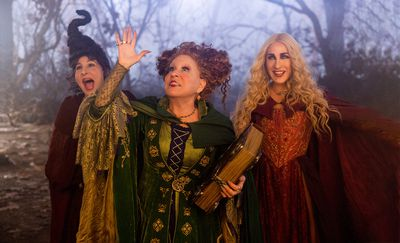
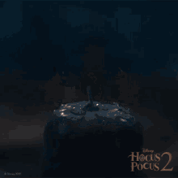
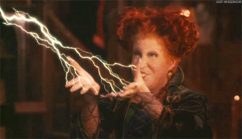
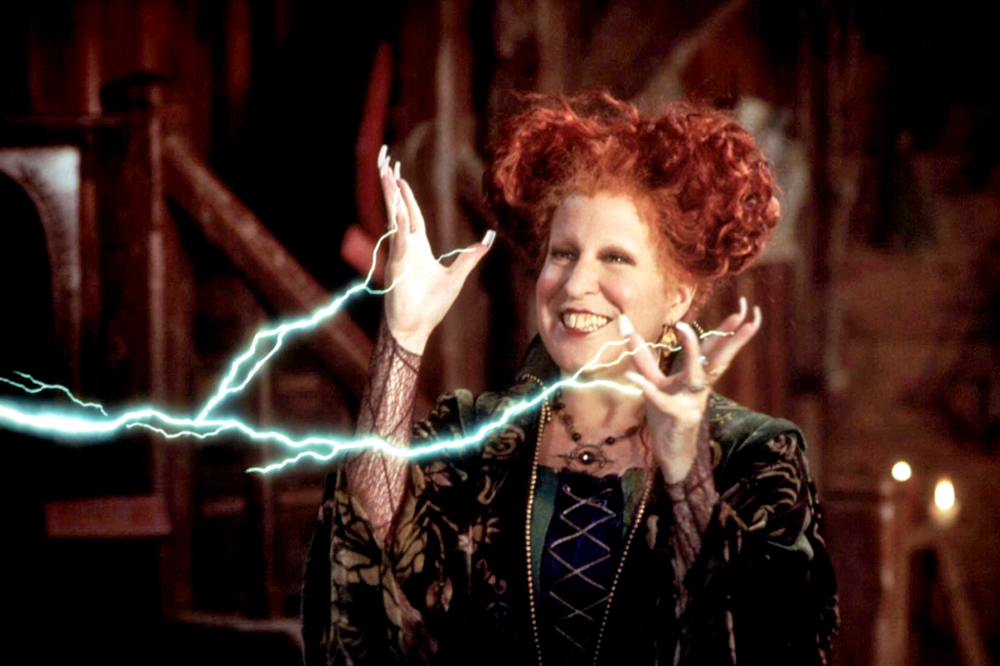

The Sanderson Sisters were the arch-villains of the Disney 1993 movie, Hocus Pocus and its 2022 sequel, Hocus Pocus 2. These three have become cult classic characters and have stayed relevant every Halloween, despite the twenty-nine year gap between movies, solidifying their place in the spooky month. But where did they come from? What made them who they are? Let's find out, shall we?
Before Hocus Pocus first went into development, there was another Disney movie focused on the spooky season, Halloween House. All that is known is that it was meant to be way darker than the finalized movie we got, with the story revolving around 12-year-old children trapped in a haunted house and needing to escape. In the end, many script and management changes--such as making the plot more humorous--landed into the Hocus Pocus that went down in history. The Sanderson Sisters were finally written in and joined the development process shortly after. It is, however, not known if the sisters were intended to be the antagonists in Halloween House.
Did you know that Hocus Pocus was not released near Halloween? It was released on July 16 1993, one month after the release of Jurassic Park (June 11 1993). It's easy to see why a movie fails, when it is up against movies that would become legendary. Because of the larger movie overshadowing Hocus Pocus, it faded into obscurity for a very long time, until the last decade, which leads us to the legacy it holds today.
For the first movie, the costumes for the sisters were made by Mary Vogt, who previously worked on Batman Returns from the previous year. The popularity of Hocus Pocus and the characters had sparked a sequel many years later, where Salvador Perez remastered the costumes for 2022. Casted by Leonardo DiCaprio, the sisters were played by Bette Midler (Winnifred), Sarah Jessica Parker (Sarah), and Kathy Najimy (Mary).
When the sequel began production, the actresses had insisted that if the sisters were to be brought back, then the people who first played them deserved to return. Disney budged and agreed to bring them back into the roles, and good thing too. Who knows what would have happened if the sisters were recasted for someone else?
In the year 1653, thirty nine years before the Salem Witch Trials began, a young Winnefred Sanderson was the biggest troublemaker Salem had ever seen. She refused the word of Reverend Traske to be married to John Prichett, instead wishing to marry William “Billy” Butcherson. She escapes with her sisters after they are almost taken away. They flee into the woods, where they meet a mysterious witch who gives them a magic book made by the Devil himself. In it lie different spells, one that allows them to drain the life force of children to keep them young, one that turns people into cats, and the most powerful, Magicae Maxima, which could grant them ultimate power.
Many years later, during the Salem Witch Trials in 1693, the Sandersons kidnap Emily Binx, to the horror of Thackery Binx, to steal her life force and become younger and beautiful. Sarah and Mary are pursued by Tharkery into the woods and to their cottage, where he finds that Winnie has prepared the potion. Despite his best efforts, Thackeray is forced to watch as Emily’s life force is drained away. To make him suffer for his failure, the witches transformed Binx into a cat that cannot die. They would have gotten away with their crime if it wasn't for Binx alerting Elijah, who then informed the town of the witch's deeds. And so, the saga began.
The sisters died a total of three times over the course of the two movies. Each one is unique in it's own way.
Hocus Pocus (A): When the townsfolk of Salem are alerted of the kidnapping of Emily, they head to the cottage to execute the witches. While the children are nowhere to be found, they do capture the witches and plan to kill them on the spot. Seconds before execution, Winniefred casts a curse. She states that in three hundred years, on All Hallow’s Eve, a virgin would light a Black Flame Candle that would be able to bring them back to life. After this happens, the three are hanged, never to be seen again for more than three hundred years!
The Salem Witch Trials (February 1692 - May 1693) are notorious for scapegoating and false accusations. None of the people executed were real witches. But here, witches were real, and the trials were legitimized. We only see the Sanderson Sisters be executed in the first movie, but it is hinted that many more were killed before them.
Hocus Pocus (B): After a night-long scuffle with Max Dennison, Dani Dennison, Allison Watts, and Thackery Binx, Winnifred captures Dani and attempts to make her drink the life-taking potion used on Emily. But Max steals the potion and drinks it himself. He stalls for time long enough for the sun to rise. Even after Winnie caught him and tried to steal his life force, the sun rises and the Black Flame Candle finally burns out. Sarah and Mary explode into dust, while Winnie is turned into a statue and shatters. With their deaths, the curse they cast on Binx is broken, thus ending their terror. But the spellbook survived, making sure that the sisters would return one day for revenge.
Hocus Pocus 2: Finally accomplishing the Magicae Maxima, the Sanderson Sisters are gifted with powers they could never imagine. But, before this happens, the spellbook, now in the hands of protagonists Cassie, Becky, and Issy, warns them that the spell would take away what the user holds most dear. After confronting the sisters of what they had done, Sarah and Mary slowly fade away, and leave Winnie all alone. Realizing that she had destroyed what she wanted to protect, she begs the trio to fix everything and bring the sisters back. Cassie recites a spell from the book that would reunite them. But Sarah and Mary don’t return, instead, Winnie begins to disappear as well. But she still thanks the girls for their act, and calls for her sisters one last time. With a mighty explosion, the Sanderson influence over Salem is destroyed, and Billy, brought back by the foolish Gilbert, disappears as well. Thus, the Sanderson Sisters are gone for good, unless another Black Flame Candle is lit.
Brainwashing: Through song, the sisters were able to hypnotize grown men and women to either dance till they die, or to serve as their dancing henchmen. The two songs that are seen in action during this are "I Put A Spell On You" and "One Way Or Another."
Sarah's Song: Sarah is best known for her song that can lure children to their cottage so they can perform their life-draining spells. It promises them to leave their fears behind as they enter a land of fantasy. Of course, these promises are hallow.
Revivals: Using a Black Flame Candle, the sisters were able to transcend death itself. Although, it can only keep them alive for one night, once the sun rises, lights out. The candle can only be lit by a virgin, male or female, and whose effects can be permanent if Magicae Maxima is performed.
Levitation: For whatever reason, they can make different objects fly, such as broom, vacuums, and Rumbas. This was done to explain exactly WHY they could float on brooms, like many stereotypical witches do. Sometimes they come in use when they are backed into a corner.
Electrokinesis: Winnie starts out as the only one who has this, but the Magicae Maxima has allowed the other two to gain this power. Whenever Winnie toys with her victims, electricity will be released from her fingers. These allow her to simply zap her prey, or cause them to be lifted into the air. This was first seen when she had tossed Max around like a ragdool within seconds of them first meeting.
Spellbook: Made by the Devil himself, the sisters' spellbook was responsible to giving them the spell recipes and their other powers. It appears to be handed down from generations of witches, as the sisters recieved it at a young age, and later fell into the possession of Cassie, Becky, and Issy by the end of the sequel. The book has a setience of its own, and is mostly seen in the sequel, where he is seen trying to warn the sisters of Magicae Maxima, sweeting when someone tries to find him on a shelf, and crying when the sisters dissapear for good. Winnie cares the most about the book, and claims it to be their prized possession, and with all of this accounted for, it's easy to see why.
Magicae Maxima: The Ultimate Spell! Through deception, deals, and many tricks, the sisters were able to perform the legendary spell that could grant the ultimate power to witches and warlocks. The sisters are the only known witches to ever perform this spell. They would have won if it wasn't for the condition that whatever the user cares about most disappears. Only then did it give Winnie a reality check and a change of heart.
Amok: Amok! Amok! Amok! Amok! Amok!
And that is the story of the Sanderson Sisters, from their very beginning, all the way to today! Even when gone, they are never forgotten. Here's to the most powerful witches of all still winging it for another three hundred years!
Research and Layout By Kalen
Design and Images By Dominic
Hocus Pocus is property of Disney
(C) Marlboro High School B-Wing